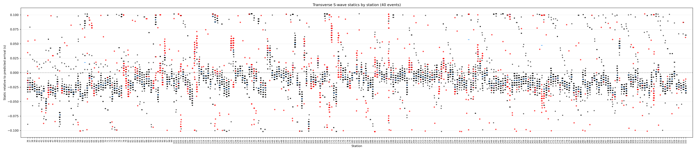
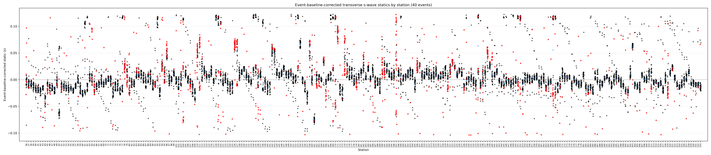
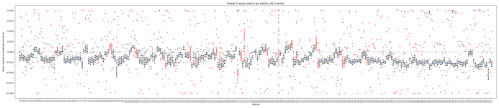
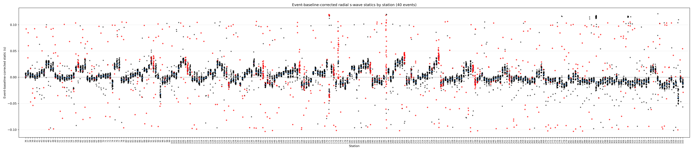

Static Corrections Summary
This page explains the station-static products generated from the S-wave alignment runs.
The current run configuration uses the transverse component T, and the plotter now reads
that value from rp_input.json unless a command-line component is supplied.
What The Pipeline Does
align_stack.py
For each event, the alignment code measures a station shift by cross-correlating each station
against the selected reference timing. It writes one Excel workbook per event/component/phase:
EVENT_COMPONENT_PHASE_3-10Hz_xcorr_statics.xlsx.
Each workbook row is one station and includes the measured lag, predicted shift, residual static, window correlation, and pass/fail flag.
plot_statics_by_station.py
The plotting script loads the matching statics rows, filters by component and phase, plots all event-by-station values, computes robust event baselines, and writes station median summaries after baseline correction.
Plain python plot_statics_by_station.py now uses the component from
rp_input.json. Use --component R, --component T,
or --component Z only when you want to override the JSON file.
R.
The alignment run had produced T statics, but the plotter was still selecting and labeling
the existing R statics unless --component T was passed.
How To Read The Plots
- Each black or red point is one station static from one event.
- Red points failed the correlation-window threshold; black points passed.
- The blue underscore is the raw station median in the uncorrected plot.
- The corrected plot subtracts a robust event baseline before recomputing station behavior.
- The station spreadsheet is the cleaner product for static corrections because it uses event-baseline correction and MAD outlier filtering.
Transverse Result


| Quantity | Transverse S |
|---|---|
| Station median static range | -0.0754 to 0.1179 s |
| Median of station medians | 0.00144 s |
| Median robust station scatter | 0.00516 s |
| Correlation-window pass fraction | 88.9% |
| Largest absolute station medians | Stations 118, 170, 252, 119, and 92 |
Radial Comparison


| Quantity | Radial S | Transverse S |
|---|---|---|
| Station median range | -0.0394 to 0.0394 s | -0.0754 to 0.1179 s |
| Median robust station scatter | 0.00345 s | 0.00516 s |
| Pass fraction | 91.3% | 88.9% |
| R/T station-median comparison | 289 common stations; max absolute difference 0.1216 s; median absolute difference 0.0127 s; correlation 0.008. | |
Files
| Product | Path |
|---|---|
| T station medians | /Users/jvidale/Documents/Research/FaultScanR/output/Statics/t_s_station_statics.xlsx |
| T event baselines | /Users/jvidale/Documents/Research/FaultScanR/output/Statics/t_s_event_baseline_shifts.xlsx |
| T full workbook | /Users/jvidale/Documents/Research/FaultScanR/output/Statics/t_s_static_baseline_summary.xlsx |
| R station medians | /Users/jvidale/Documents/Research/FaultScanR/output/Statics/r_s_station_statics.xlsx |